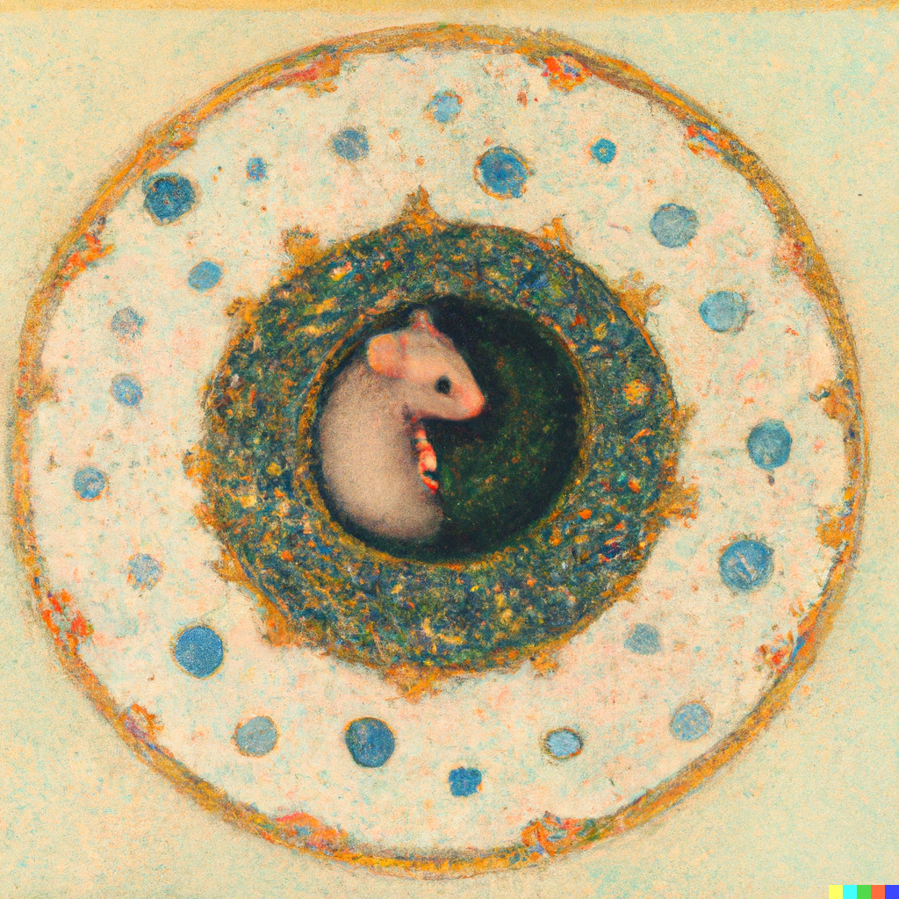

About me:
I am a Postdoctoral Fellow in the Moser Group at the Kavli Institute for Systems Neuroscience.
I am currently investigating the ontogeny of our sense of space, with a focus on the developmental timeline and the neural circuit implementations of toroidal and ring manifolds.
During my PhD I developed new implant systems for mice and studied temporal codes in CA1 1;2.
Passions on the side: poetry, history, mushrooms and the mediterranean sea. ||

About my research: from the body to cognitive maps
"Cognition is not the representation of a pre-given world by a pre-given mind but is rather the enaction of a world and a mind." — Varela et al. (1991)
How do biological systems learn to coordinate sensation and movement to generate increasingly adaptive behaviors during development?
Animals learn about the world by moving through it: the body generates the very first experience the brain needs to calibrate and anchor internally generated networks.
Starting from the brain's spatial navigation system, I study how this unfolds in thalamo-cortical circuits combining state-of-the-art complementary perspectives: (i) high-density neural population recordings, (ii) neural population dynamics analysis and (iii) detailed behavioral decomposition.